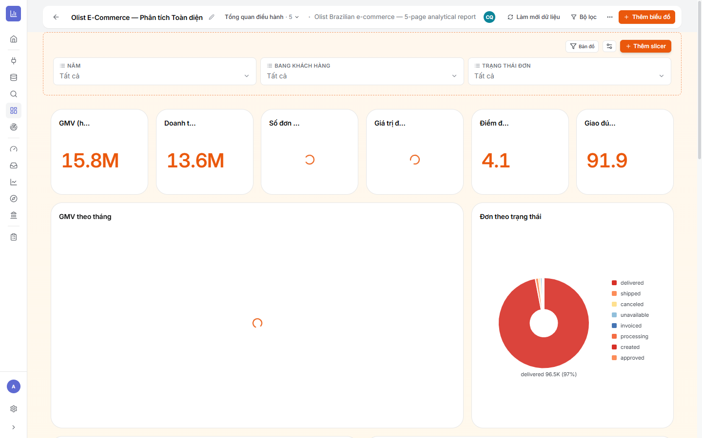
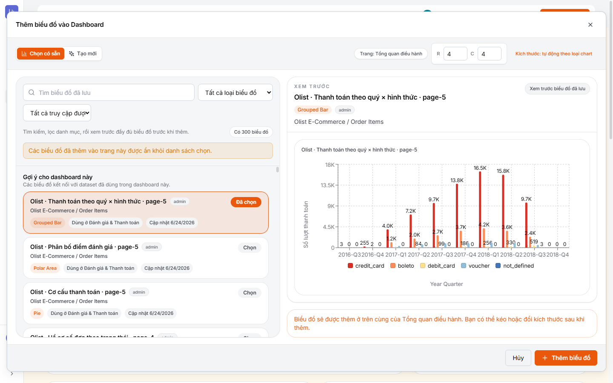
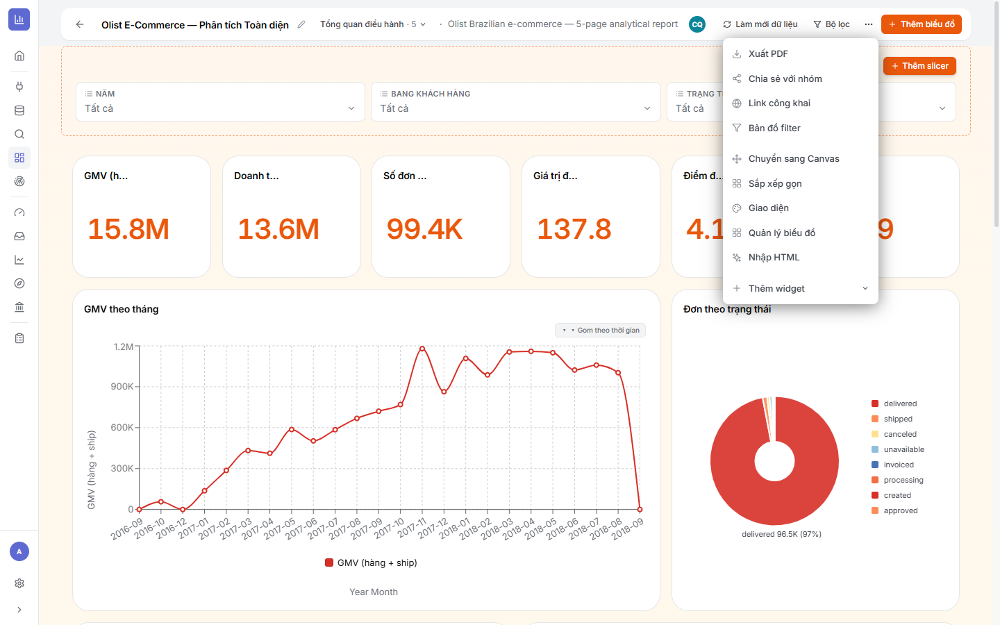
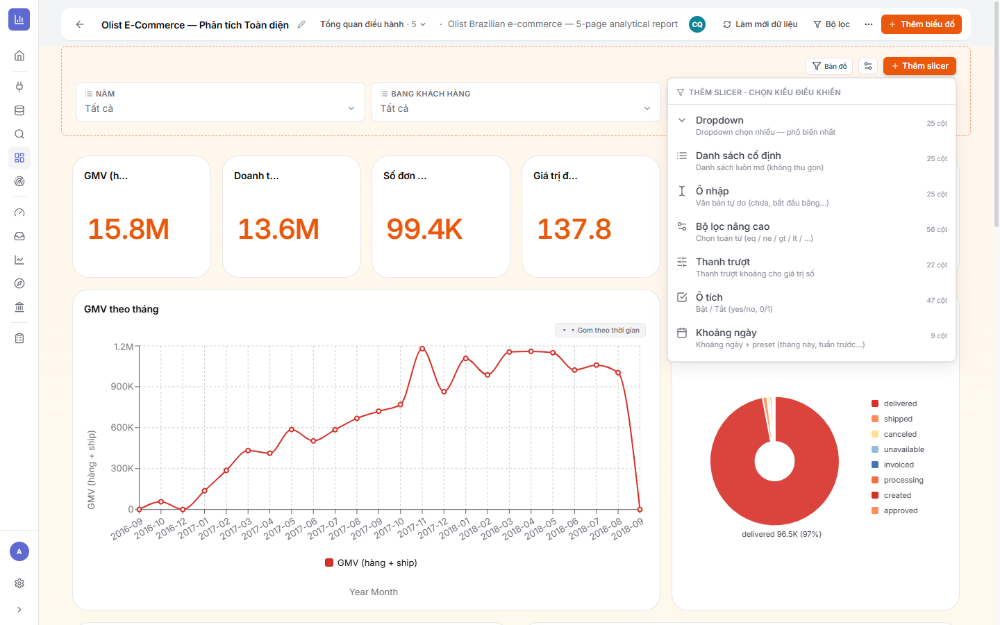
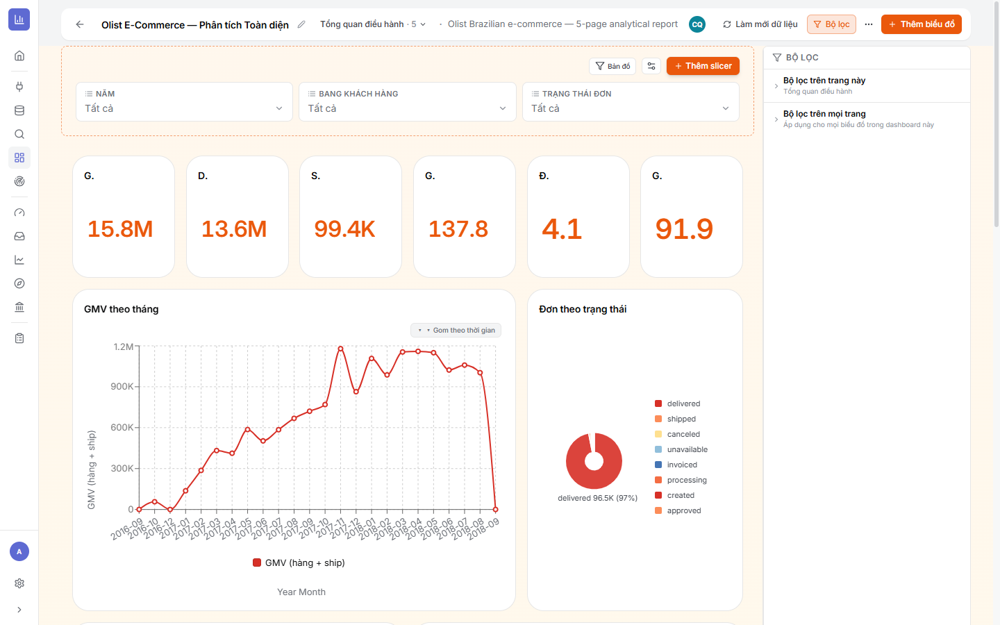
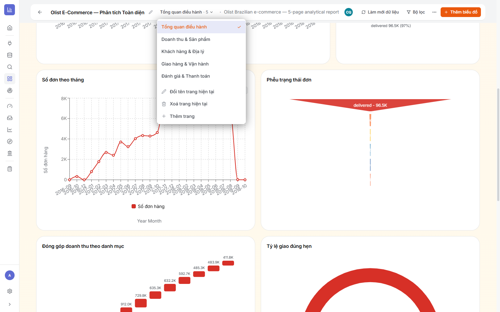

5.1Màn hình Dashboard & thanh công cụ
Là gì: mỗi Dashboard gồm nhiều trang; mỗi trang chứa các tile (KPI, biểu đồ, slicer, widget). Thanh trên cùng gom các thao tác chính.
⚙ Các nút trên thanh công cụ
- ← Quay lại + tên báo cáo (bút chì để đổi tên).
- Chuyển trang (ví dụ “Tổng quan điều hành · 5”) — chọn/đổi trang.
- Làm mới dữ liệu — chạy lại truy vấn cho toàn báo cáo.
- Bộ lọc — mở bảng bộ lọc (mục 5.5).
- ⋯ Thêm tuỳ chọn — Giao diện, Link công khai, Canvas, Sắp xếp, Quản lý biểu đồ, Xuất PDF, Nhập HTML, Thêm widget…
- Thêm biểu đồ và Thêm slicer (ở dải bộ lọc).

5.2Thêm biểu đồ đã lưu vào Dashboard
Là gì: cách chuẩn là tái sử dụng chart đã lưu (thay vì dựng lại). Bấm Thêm biểu đồ để mở hộp chọn.
⚙ Cách làm
- Chọn tab Chọn có sẵn (hoặc Tạo mới để dựng chart ngay tại đây).
- Tìm biểu đồ đã lưu theo tên, lọc theo loại chart/quyền truy cập; mục Gợi ý cho dashboard này ưu tiên chart cùng dataset.
- Bấm vào một chart để xem trước (render đầy đủ với dữ liệu) ở bên phải.
- Đặt kích thước ô lưới bằng R (hàng) × C (cột) — hoặc để “tự động theo loại chart”.
- Bấm + Thêm biểu đồ. Tile xuất hiện ở đầu trang, kéo/đổi kích thước sau.

5.3Sắp xếp layout — Grid, Canvas & công cụ
Là gì: sắp đặt các tile cho dễ đọc. Có 2 chế độ bố cục và vài công cụ trong menu ⋯.
⚙ Cách làm
- Kéo-thả tile để di chuyển; kéo mép để đổi kích thước.
- Grid (mặc định) — lưới hàng/cột gọn gàng. Chuyển sang Canvas (menu ⋯) — bố cục tự do, đặt tile ở bất kỳ đâu.
- Sắp xếp gọn (⋯) — tự dồn các tile cho ngăn nắp.
- Quản lý biểu đồ (⋯) — xem/ẩn/xoá nhanh các tile trên trang.
- Thêm widget (⋯) — chèn tiêu đề/ghi chú/ảnh… ngoài biểu đồ.

5.4Slicer — bộ điều khiển lọc cho người xem
Là gì: slicer là ô lọc đặt ngay trên báo cáo để người xem tự chọn (Năm, Bang, Trạng thái…). Bấm Thêm slicer rồi chọn kiểu điều khiển.
⚙ 7 kiểu slicer
- Dropdown — chọn nhiều, phổ biến nhất.
- Danh sách cố định — luôn mở (không thu gọn).
- Ô nhập — gõ văn bản (chứa / bắt đầu bằng…).
- Bộ lọc nâng cao — chọn toán tử (eq / ne / gt / lt…).
- Thanh trượt — khoảng cho giá trị số.
- Ô tích — Bật/Tắt (yes/no, 0/1).
- Khoảng ngày — khoảng ngày + preset (tháng này, tuần trước…).

5.5Bảng bộ lọc — trang này vs toàn báo cáo
Là gì: ngoài slicer (người xem thấy), còn có Bảng bộ lọc (bấm Bộ lọc) để người dựng đặt điều kiện nền:
- Bộ lọc trên trang này — chỉ áp cho trang đang mở.
- Bộ lọc trên mọi trang — áp cho mọi biểu đồ trong dashboard.

5.6Báo cáo đa trang
Là gì: một Dashboard có nhiều trang (như dash67 có 5: Tổng quan điều hành, Doanh thu & Sản phẩm, Khách hàng & Địa lý, Giao hàng & Vận hành, Đánh giá & Thanh toán).
⚙ Cách làm (menu Chuyển trang)
- Bấm tên trang trên thanh công cụ để mở danh sách trang.
- Thêm trang — tạo trang mới.
- Đổi tên trang hiện tại / Xoá trang hiện tại.
- Bấm một trang để chuyển sang.

5.7Tương tác & xuất bản
- Cross-highlight: bấm vào một cột/điểm trên biểu đồ → các biểu đồ khác cùng trang lọc theo (kiểu Power BI).
- Toolbar mỗi tile: mở trong Explore (↗), bộ lọc riêng biểu đồ (HAVING), tuỳ chọn (⋯), xoá (×).
- Làm mới dữ liệu để lấy số mới; Xuất PDF (⋯) để gửi bản in; Nhập HTML (⋯) để dựng nhanh trang từ HTML.
- Chia sẻ: Chia sẻ với nhóm (người có tài khoản) hoặc Link công khai — xem Chương 7.
5.8Xong Chương 5 — Checklist
- ✅ Đã thêm các chart đã lưu vào đúng trang, đặt kích thước hợp lý.
- ✅ Bố cục rõ ràng (KPI trên, chi tiết dưới); mỗi trang một chủ đề.
- ✅ Có slicer đúng kiểu & đúng phạm vi (trang/mọi trang).
- ✅ Bộ lọc nền đặt đúng lớp; cross-highlight hoạt động.
➡️ Tiếp theo: Chương 6 · Theme & giao diện — chỉnh màu/nền/font/thẻ cho báo cáo đẹp và nhất quán.